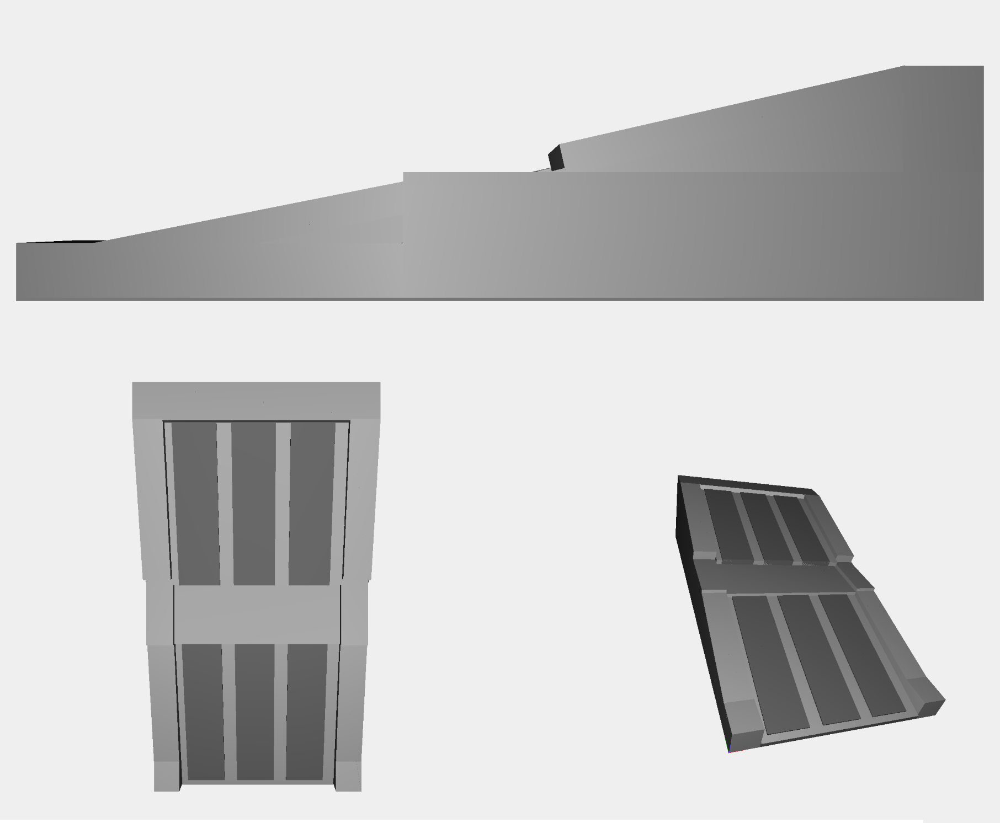
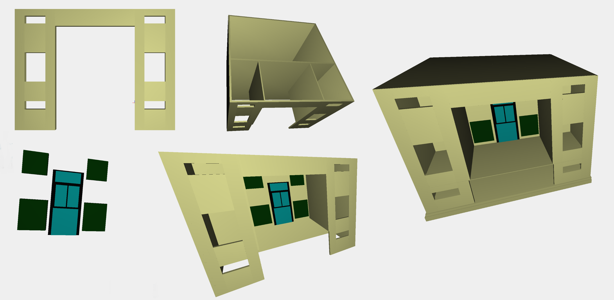
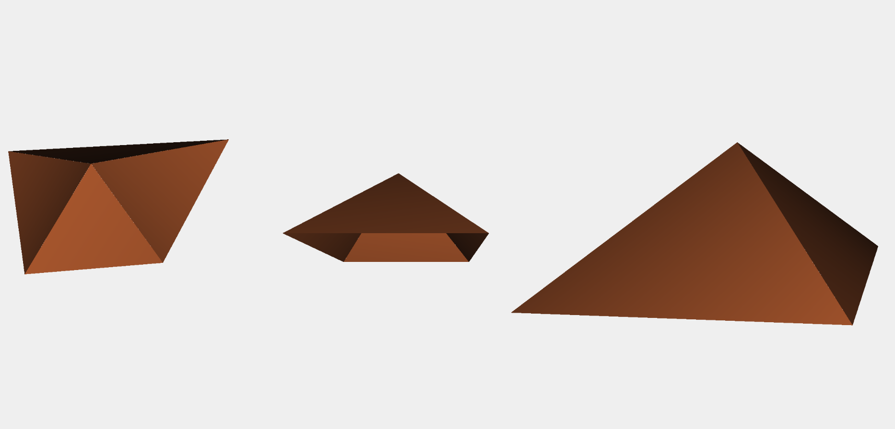
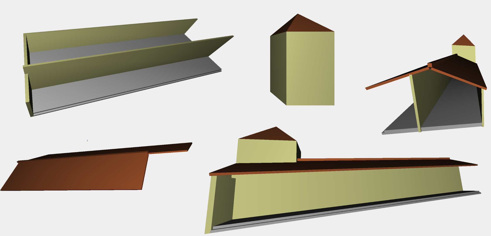
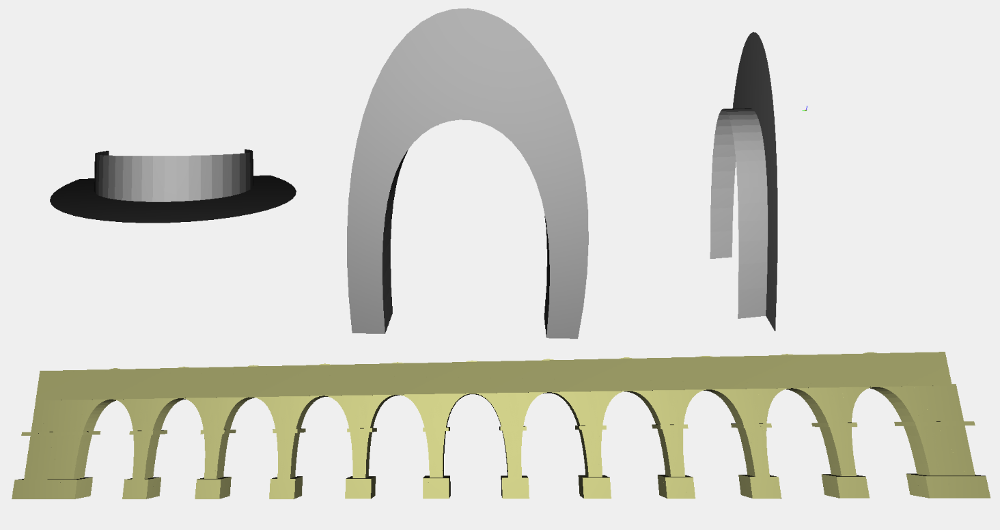
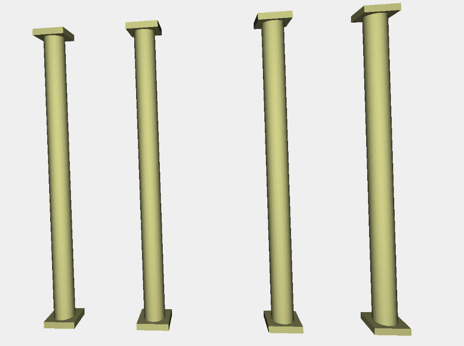
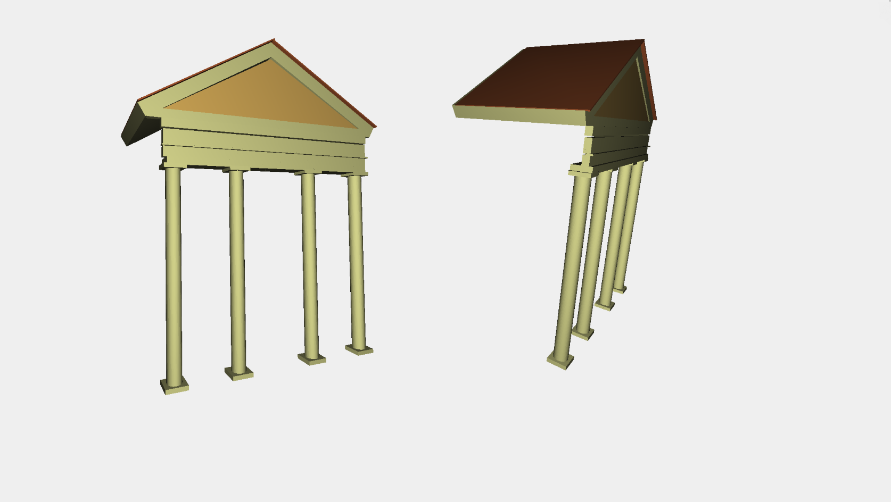
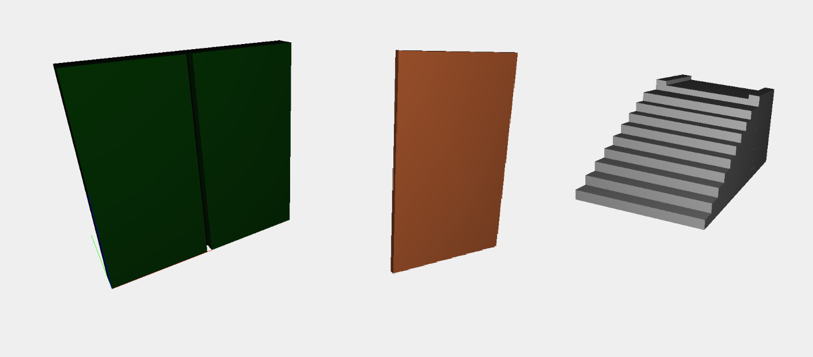

This section describes the major components of the project which form the Villa Emo.
The image below describes the simple inclined plane without steps facilitates communication with the house.

The parts used to create the central building with entrance door and windows.

The roof of the main building created with the composition of triangles.

The image contains the various components to create the side structure of Villa.There are the steps of stone, the outer walls, the lateral roof and the tower.

The creation of the arches is a composition of bezier curves that generate curves and surfaces as shown in the figure.

The columns used to support the structure above the main entrance.

The image shows the structure consisting of pillars and beams to support the truss.

Extra components like windows,doors and the rear stairway are represented in the image below.
